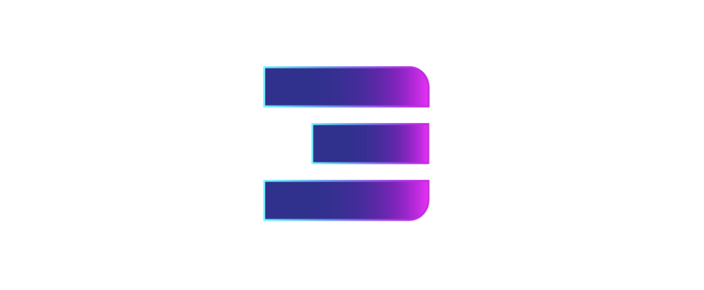

Technology
ThreeFold has developed a highly efficient infrastructure layer for a new internet.
ThreeFold tech stack has 4 main layers
- compute - a flexible way to deploy any workload on edge cloud computers
- storage - a quantum safe storage system
- network - a planetary scalable overlay network
- blockchain for Smart Contract For IT
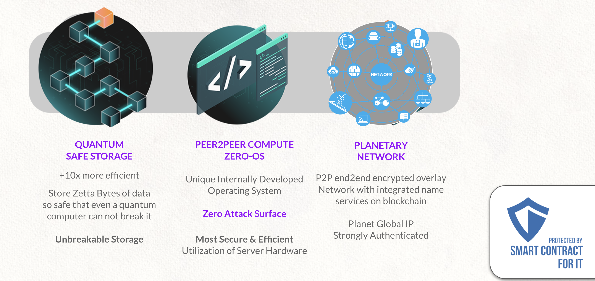
A lot of capacity has been deployed in the world, ThreeFold farmers buy a computer and they connect it to the internet, as such they use our Operating system to provide Internet capacity to the world.

There are multiple ways how people can interactive without our platform (as developer or IT expert = sysadmin):

All technology is developed by ThreeFold and is opensource, this technology is being used for the ThreeFold grid see https://www.threefold.io which is a deployment of a new internet which is green, safe and owned by all of us.
This document explains how we are a missing layer for the full web2, web3 and blockchain world.
This leads to a system which is highly scalable.
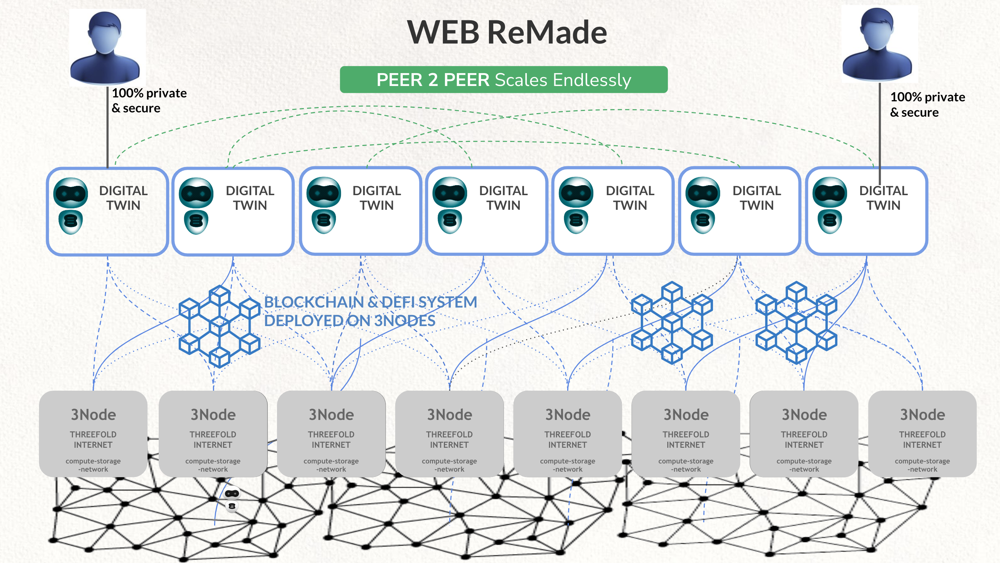
Capacity Layer

Zero-OS
ThreeFold has build its own operating system called, Zero-OS which was based starting from a Linux Kernel with as purpose to remove all the unnecessary complexity found on contemporary OS's.
Zero-OS supports a small number of primitives, and performs low-level functions natively.
It delivers 3 primitive functions:
- storage capacity
- compute capacity
- network capacity
There is no shell, local nor remote attached to Zero-OS. It does not allow for inbound network connections to happen to the core. Also, given its shell-less nature, the people and organizations, called farmers, that run 3nodes cannot issue any commands nor access its features. In that sense, Zero-OS enables a "zero people" (autonomous) Internet, meaning hackers cannot get in, while also eliminating human error from the paradigm.
3Node
The ThreeFold_Grid needs hardware/servers to function. Servers of all shapes and sizes can be added to the grid by anyone, anywhere in the world. The production of Internet Capacity on the Threefold Grid is called Farming and people who add these servers to the grid are called Farmers. This is a fully decentralized process and they get rewarded by the means of TFT.
Farmers download the Zero-OS operating system and boot their servers themselves. Once booted, these servers become 3Nodes. The 3Nodes will register themselves in a database called the TF_Explorer. Once registered in the TF_Explorer, the capacity of the 3Nodes will become available on the TF Grid Explorer. Also, given the autonomous nature of the ThreeFold_Grid, there is no need for any intermediaries between the user and 3Nodes.
This enables a complete peer-to-peer environment for people to reserve their Internet Capacity directly from the hardware.
Smart Contract for IT
The purpose of the smart contract for IT is to create and enable autonomous IT. Autonomous self-driving IT is possible.
Once a smart contract for IT is created, it will be registered in the TFChain Blockchain.
Learn more about smart contract for IT here.
TFChain
A blockchain running on the TFGrid stores following information (TFGrid 3.0)
- registry for all digital twins (identity system, aka phonebook)
- registry for all farmers & 3nodes
- registry for our reputation system
- info as required for the Smart Contract for IT
This is the hart of our operational system of the TFGrid
Peer-to-Peer Network
The peer-to-peer network allows any zmachine or user to connect with other zmachine or users on the TF Grid securely and creates a private shortest path peer-to-peer network.
Web Gateway
The Web Gateway is a mechanism to connect the private (overlay) networks to the open Internet. By not providing an open and direct path in to the private network, a lot of malicious phishing and hacking attempts are stopped at the Web Gateway level for container applications.
i
Quantum Safe Storage System
Imagine a storage system with the following benefits
This is not a dream but does exist and is the underpinning of the TFGrid.
Our storage architecture follows the true peer-to-peer design of the TF grid. Any participating node only stores small incomplete parts of objects (files, photos, movies, databases...) by offering a slice of the present (local) storage devices. Managing the storage and retrieval of all of these distributed fragments is done by a software that creates development or end-user interfaces for this storage algorithm. We call this 'dispersed storage'.
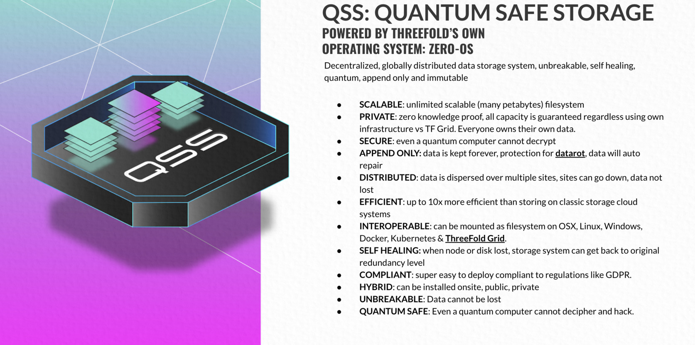
Peer2peer provides the unique proposition of selecting storage providers that match your application and service of business criteria. For example, you might be looking to store data for your application in a certain geographic area (for governance and compliance) reasons. Also, you might want to use different "storage policies" for different types of data. Examples are live versus archived data. All of these uses cases are possible with this storage architecture and could be built by using the same building blocks produced by farmers and consumed by developers or end-users.
i
Quantum Safe Storage System
Imagine a storage system with the following benefits
This is not a dream but does exist and is the underpinning of the TFGrid.
Our storage architecture follows the true peer-to-peer design of the TF grid. Any participating node only stores small incomplete parts of objects (files, photos, movies, databases...) by offering a slice of the present (local) storage devices. Managing the storage and retrieval of all of these distributed fragments is done by a software that creates development or end-user interfaces for this storage algorithm. We call this 'dispersed storage'.
Peer2peer provides the unique proposition of selecting storage providers that match your application and service of business criteria. For example, you might be looking to store data for your application in a certain geographic area (for governance and compliance) reasons. Also, you might want to use different "storage policies" for different types of data. Examples are live versus archived data. All of these uses cases are possible with this storage architecture and could be built by using the same building blocks produced by farmers and consumed by developers or end-users.
i
Quantum Safe Filesystem
A redundant filesystem, can store PB's (millions of gigabytes) of information.
Unique features:
- Unlimited scalable (many petabytes) filesystem
- Quantum Safe:
- On the TFGrid, no farmer knows what the data is about
- Even a quantum computer cannot decrypt
- Data can't be lost
- Protection for datarot, data will autorepair
- Data is kept for ever (data does not get deleted)
- Data is dispersed over multiple sites
- Sites can go down, data not lost
- Up to 10x more efficient than storing on classic storage cloud systems
- Can be mounted as filesystem on any OS or any deployment system (OSX, Linux, Windows, Docker, Kubernetes, TFGrid, ...)
- Compatible with +- all data workloads (not high performance data driven workloads like a database)
- Self-healing: when a node or disk lost, storage system can get back to original redundancy level
- Helps with compliance to regulations like GDPR (as the hosting facility has no view on what is stored, information is encrypted and incomplete)
- Hybrid: can be installed onsite, public, private, ...
- Read-write caching on encoding node (the front end)

Mount Any Files in your Storage Infrastructure
The QSFS is a mechanism to mount any file system (in any format) on the grid, in a quantum-secure way.
This storage layer relies on relies on 3 primitives of the ThreeFold technology :
-
0-db is the storage engine. It is an always append database, which stores objects in an immutable format. It allows keeping the history out-of-the-box, good performance on disk, low overhead, easy data structure and easy backup (linear copy and immutable files).
-
0-stor-v2 is used to disperse the data into chunks by performing 'forward-looking error-correcting code' (FLECC) on it and send the fragments to safe locations. It takes files in any format as input, encrypts this file with AES based on a user-defined key, then FLECC-encodes the file and spreads out the result to multiple 0-DBs. The number of generated chunks is configurable to make it more or less robust against data loss through unavailable fragments. Even if some 0-DBs are unreachable, you can still retrieve the original data, and missing 0-DBs can even be rebuilt to have full consistency. It's an essential element of the operational backup.
-
0-db-fs is the filesystem driver which uses 0-DB as a primary storage engine. It manages the storage of directories and metadata in a dedicated namespace and file payloads in another dedicated namespace.
Together they form a storage layer that is quantum secure: even the most powerful computer can't hack the system because no single node contains all of the information needed to reconstruct the data.

This concept scales forever, and you can bring any file system on top of it:
- S3 storage
- any backup system
- an ftp-server
- IPFS and Hypercore distributed file sharing protocols
- ...

Architecture
By using our filesystem inside a Virtual Machine or Kubernetes the TFGrid user can deploy any storage application on top e.g. Minio for S3 storage, OwnCloud as online fileserver.
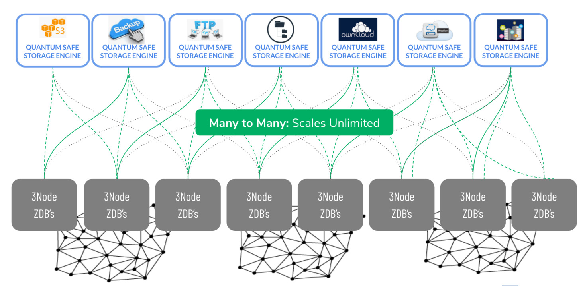
Any storage workload can be deployed on top of the zstor.
graph TD subgraph Data Ingress and Egress qss[Quantum Safe Storage Engine] end subgraph Physical Data storage st1[Virtual Storage Device 1] st2[Virtual Storage Device 2] st3[Virtual Storage Device 3] st4[Virtual Storage Device 4] st5[Virtual Storage Device 5] st6[...] qss -.-> st1 & st2 & st3 & st4 & st5 & st6 end
Quantum Safe Storage Algoritm

The Quantum Safe Storage Algorithm is the heart of the Storage engine. The storage engine takes the original data objects and creates data part descriptions that it stores over many virtual storage devices (ZDB/s)
Data gets stored over multiple ZDB's in such a way that data can never be lost.
Unique features
- data always append, can never be lost
- even a quantum computer cannot decrypt the data
- is spread over multiple sites, sites can be lost, data will still be available
- protects for datarot.
Why
Today we produce more data than ever before. We could not continue to make full copies of data to make sure it is stored reliably. This will simply not scale. We need to move from securing the whole dataset to securing all the objects that make up a dataset.
ThreeFold is using space technology to store data (fragments) over multiple devices (physical storage devices in 3Nodes). The solution does not distribute and store parts of an object (file, photo, movie...) but describes the part of an object. This could be visualized by thinking of it as equations.
Details
Let a,b,c,d.... be the parts of that original object. You could create endless unique equations using these parts. A simple example: let's assume we have 3 parts of original objects that have the following values:
a=1
b=2
c=3
(and for reference that part of real-world objects is not a simple number like 1 but a unique digital number describing the part, like the binary code for it 110101011101011101010111101110111100001010101111011.....). With these numbers we could create endless amounts of equations:
1: a+b+c=6
2: c-b-a=0
3: b-c+a=0
4: 2b+a-c=2
5: 5c-b-a=12
......
Mathematically we only need 3 to describe the content (=value) of the fragments. But creating more adds reliability. Now store those equations distributed (one equation per physical storage device) and forget the original object. So we no longer have access to the values of a, b, c and see and we just remember the locations of all the equations created with the original data fragments. Mathematically we need three equations (any 3 of the total) to recover the original values for a, b or c. So do a request to retrieve 3 of the many equations and the first 3 to arrive are good enough to recalculate the original values. Three randomly retrieved equations are:
5c-b-a=12
b-c+a=0
2b+a-c=2
And this is a mathematical system we could solve:
- First:
b-c+a=0 -> b=c-a - Second:
2b+a-c=2 -> c=2b+a-2 -> c=2(c-a)+a-2 -> c=2c-2a+a-2 -> c=a+2 - Third:
5c-b-a=12 -> 5(a+2)-(c-a)-a=12 -> 5a+10-(a+2)+a-a=12 -> 5a-a-2=2 -> 4a=4 -> a=1
Now that we know a=1 we could solve the rest c=a+2=3 and b=c-a=2. And we have from 3 random equations regenerated the original fragments and could now recreate the original object.
The redundancy and reliability in such system comes in the form of creating (more than needed) equations and storing them. As shown these equations in any random order could recreate the original fragments and therefore redundancy comes in at a much lower overhead.
Example of 16/4
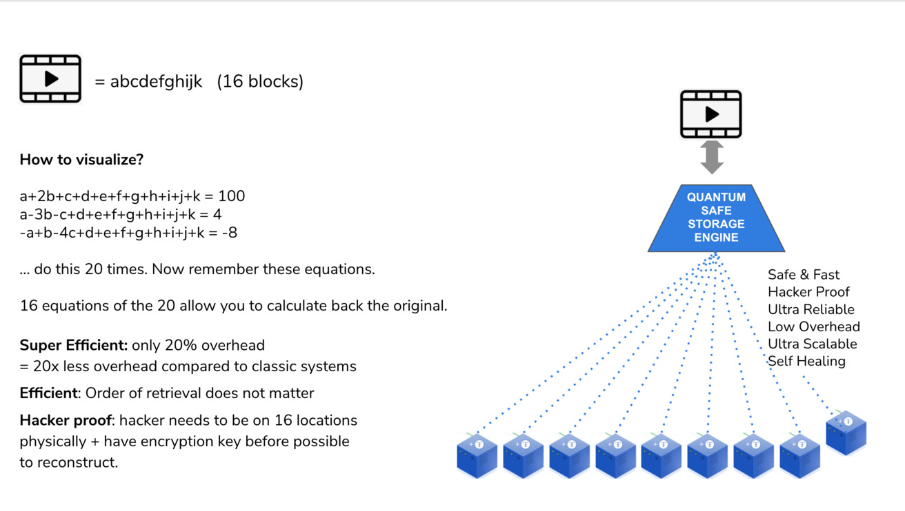
Each object is fragmented into 16 parts. So we have 16 original fragments for which we need 16 equations to mathematically describe them. Now let's make 20 equations and store them dispersedly on 20 devices. To recreate the original object we only need 16 equations, the first 16 that we find and collect which allows us to recover the fragment and in the end the original object. We could lose any 4 of those original 20 equations.
The likelihood of losing 4 independent, dispersed storage devices at the same time is very low. Since we have continuous monitoring of all of the stored equations, we could create additional equations immediately when one of them is missing, making it an auto-regeneration of lost data and a self-repairing storage system. The overhead in this example is 4 out of 20 which is a mere 20% instead of (up to) 400%.
Content distribution Policy (10/50)
This system can be used as backend for content delivery networks.
Imagine a movie being stored on 60 locations from which we can loose 50 at the same time.
If someone now wants to download the data the first 10 locations who answer fastest will provide enough of the data parts to allow the data to be rebuild.
The overhead here is much more compared to previous example but stil order of magnitude lower compared to other cdn systems.
Datarot
Datarot cannot happen on this storage system
Fact that data storage degrades over time and becomes unreadable, on e.g. a harddisk. The storage system provided by ThreeFold intercepts this silent data corruption, making that it can pass by unnotified.
see also https://en.wikipedia.org/wiki/Data_degradation
Zero Knowledge Proof
The quantum save storage system is zero knowledge proof compliant. The storage system is made up / split into 2 components: The actual storage devices use to store the data (ZDB's) and the Quantum Safe Storage engine.
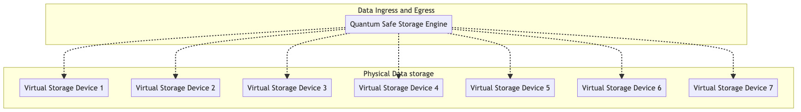
The zero proof knowledge compliancy comes from the fact the all the physical storage nodes (3nodes) can proof that they store a valid part of what data the quantum safe storage engine (QSSE) has stored on multiple independent devices. The QSSE can validate that all the QSSE storage devices have a valid part of the original information. The storage devices however have no idea what the original stored data is as they only have a part (description) of the origina data and have no access to the original data part or the complete origal data objects.
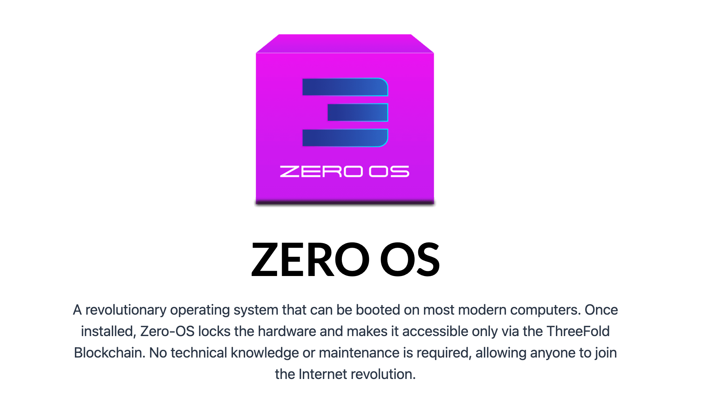
Zero-OS
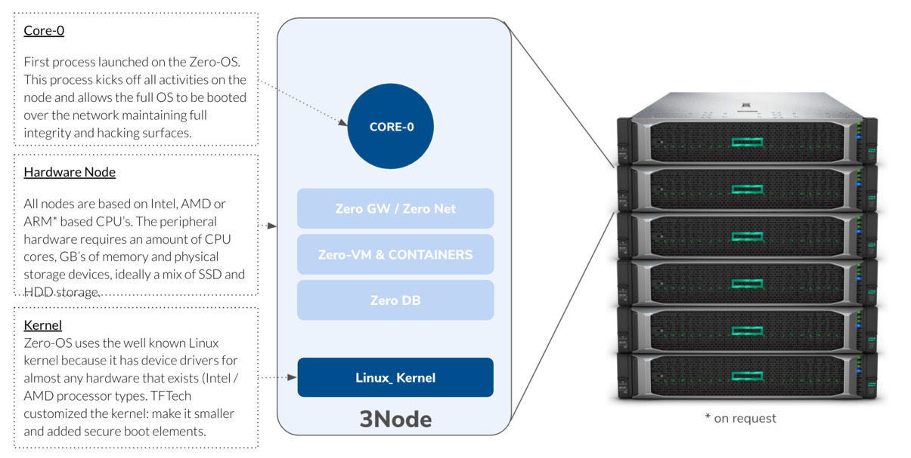
ZOS compute storage overview
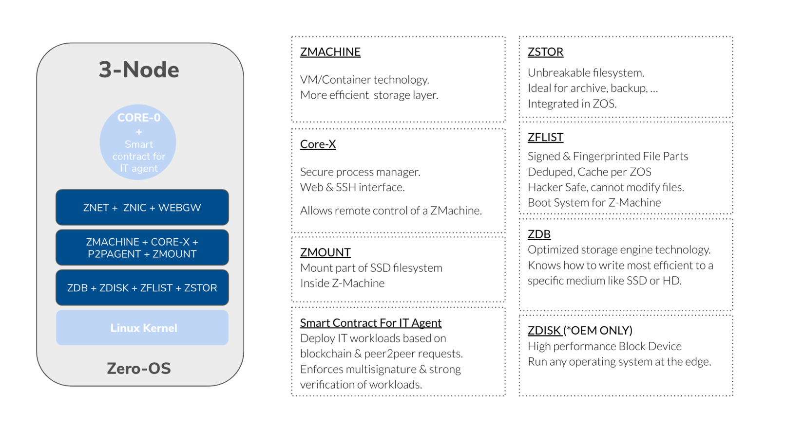
ZOS network overview

Imagine an operating system with the following benefits
- upto 10x more efficient for certain workloads (e.g. storage)
- no install required
- all files are deduped for the VM's, containers and the ZOS itself, no more data duplicated filesystems
- the hacking footprint is super small, which leads to much more safe systems
- every file is fingerprinted and gets checked at launch time of an application
- there is no shell or server interface on the operating system
- the networks are end2end encrypted between all Nodes
- there is the possibility to completely disconnect the compute/storage from the network service part which means hackers have a lot less chance to get to the data.
- a smart contract for IT layer allows groups of people to deploy IT workloads with concensus and full control
- all workloads which can run on linux can run on Zero-OS but in a much more controlled, private and safe way
ThreeFold has created an operating system from scratch, we used the Linux kernel and its components and then build further on it, we have been able to achieve all above benefits.
The requirements for our TFGrid based on Zero OS are:
- Autonomy: TF Grid needs to create compute, storage and networking capacity everywhere. We could not rely on a remote (or a local) maintenance of the operating system by owners or operating system administrators.
- Simplicity: An operating system should be simple, able to exist anywhere, for anyone, good for the planet.
- Stateless. In a grid (peer-to-peer) set up, the sum of the components is providing a stable basis for single elements to fail and not bring the whole system down. Therefore, it is necessary for single elements to be stateless, and the state needs to be stored within the grid.
Zero install
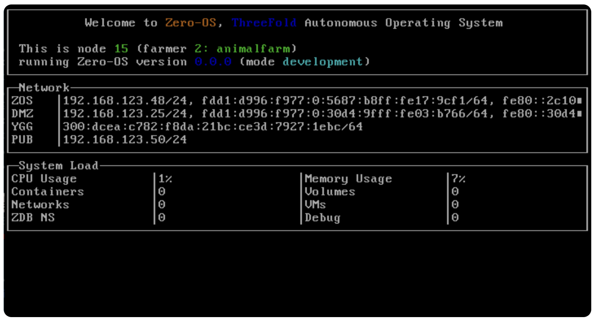
The Zero-OS is delivered to the 3Nodes over the internet network (network boot) and does not need to be installed.
3Node Install
- Acquire a computer (server).
- Configure a farm on the TFGrid explorer.
- Download the bootloader and put on a USB stick or configure a network boot device.
- Power on the computer and connect to the internet.
- Boot! The computer will automatically download the components of the operating system (Zero-OS).
The actual bootloader is very small. It brings up the network interface of your computer and queries TFGeid for the remainder of the boot files needed.
The operating system is not installed on any local storage medium (hard disk, ssd). Zero-OS is stateless.
The mechanism to allow this to work in a safe and efficient manner is a ThreeFold innovation called our container virtual filesystem.
This is explained in more detail in our SDK manual.
Unbreakable Storage

- unlimited history
- survives network, datacenter or node breakdown
- no silent corruption possible
- quantum safe (data cannot be decrypted by quantum computers) as long as quantum computer has no access to the metadata
- self healing & autocorrecting
If you deploy a container with simple disk access, you don’t have it. Performance is around 50MB/second, if a bit more CPU is given for the distributed storage encoder, we achieve this performance.
More info see Quantum Safe Storage.
Zero Boot
Zero Boot = Zero-OS boot process
ZOS Boot is a boot facility that allows 3nodes to boot from network boot servers located in the TF Grid. This boot mechanism creates as little as possible operational and administration overhead. ZOS Boot is a crucial part for enabling autonomy by not having the operating system installed on local disks on 3nodes. With a boot network facility and no local operating system files you immediate erase a number of operational and administration tasks:
- to install the operating system to start with
- to keep track of which systems run which version of the operating system (especially in large setups this is a complicated and error prone task)
- to keep track of patches and bug fixes that have been applied to systems
That's just the administration and operational part of maintaining a server estate with local installed operating system. On the security side of things the benefits are even greater:
- many hacking activities are geared towards adding to or changing parts of the operating system files. This is a threat from local physical access to servers as well as over the network. When there are no local operating system files installed this threat does not exist.
- accidental overwrite, delete or corruption of operating system files. Servers run many processes and many of these processes have administrative access to be able to do what they need to do. Accidental deletion or overwrites of crucial files on disk will make the server fail a reboot.
- access control. I there is no local operating system installed access control, user rights etc etc. are unnecessary functions and features and do not have to be implemented.
How
In this image from fs, a small partition is mounted in memory to start booting the machine, it gets IPXE (downloads what it needs), and then 0-OS boots. After that, going to the hub, downloading different lists.
There is 1 main flist that triggers downloads of multiple flists (see hub, and then https://hub.grid.tf/tf-zos/zos:development:latest.flist.md ). In there all the components/daemons that do part of the 0-OS. Also the download of the zos-bins, i.e. external binaries are triggered this way (https://hub.grid.tf/tf-zos-bins).
The core components of zero-os can be found in: Zero-OS repo = If something changes in the directory, a workflow is triggered to rebuild the full flist and push it to the hub.
When a node discovers there is a new version of one of these lists on the hub, it downloads it, restarts the daemon with the new version. Over the lifetime of the node, it keeps pulling on the hub directories to check whether new daemons/flists/binaries are available and whether things need get upgraded.
Features
The features of ZOS Boot are:
- no local operating system installed
- network boot from the grid to get on the grid
- decreased administrative and operational work, allowing for autonomous operations
- increased security
- increased efficiency (deduplication, only one version of the OS stored for thousands of servers)
- all server storage space is available for enduser workloads (average operating system size around 10GB)
- bootloader is less than 1MB in size and can be presented to the servers as a PXE script, USB boot device, ISO boot image.
Deterministic Deployment

The Dedupe filesystem flist uses an interface which allows you to create the file system interface in user space, it is a virtual filesystem.
Metadata is exposed. The system sees the full tree of the image, but data itself not there, data is downloaded whenever they are accessed and fully deduped (unique data).
TODO: improve
Benefits
- Smart contract for IT The smart contract for IT concept is applicable to any workload: containers, VMs, all gateways primitives, volumes, kubernetes and network. It is a static agreement between farmer and user about deployment of an IT workload.
- no dynamic behavior for deployment at runtime
- no process can start unless the files are 100% described on flist level
There are multiple ways to create an flist:
- Convert an existing docker image which is hosted on the docker hub
- Push an archive like a tgz on the hub
- A library and CLI tool exist to build the flist from scratch: doing it this way, the directory is locally populated, and the flist is then created from the CLI tool.
- A GitHub action allows to build a flist directly from GitHub action, useful for developers on GitHub
Peer2Peer Network Concept
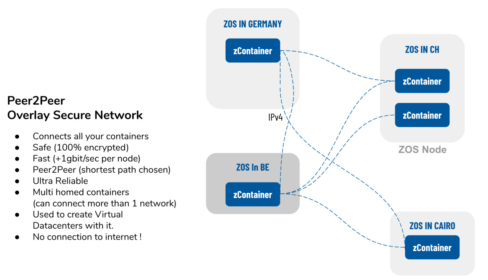
True peer-to-peer is a principle that exists everywhere within Threefold's technology stack, especially on its Network Architecture. Farmers produce IT capacity by connecting hardwares to the network and installing Zero-OS. The peer-to-peer network of devices forms the TF Grid. This TF Grid is a universal TFChain of which a large variety of IT workloads exist and run.
Peer-to-peer networking
The TF Grid is built by 3Nodes (hardware + Zero-OS) that are connected to the internet by using the IPv6 protocol. To future-proof this grid, IPv6 has been chosen as ThreeFold Grid's native networking technology. The TF Grid operates on IPv6 (where available) and creates peer-to-peer network connections between all the containers (and other primitives). Please find more about Zero-OS primitives in our SDK manual
This creates a many-to-many web of (encrypted) point-to-point network connections which together make a (private) secure overlay network. This network is completely private and connects only the primitives that have been deployed in your network.
TF Network Characteristics:
- Connect all containers point-to-point;
- All traffic is encrypted;
- High performance;
- The shortest path between two end-points, multi-homed containers;
- Could span large geographical areas and create virtual data centers;
- All created and made operational without public access from the internet.
Existing Enterprise Private Networks
At Threefold, we are aware of the existence of private networks, IPsec, VPN, WAN's and more. We have the facility to create bridges to make those networks part of the deployed private overlay networks. This is in an early stage development, but with the right level(s) of interest this could be built out and carried out in the near future.
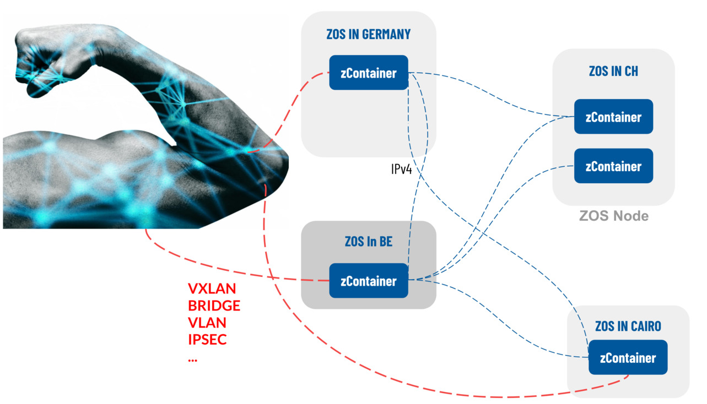

TFGrid Low Level Functions = Primitives
The following are the low level constructs which can be deployed on the TFGrid.
The following functionalities allow you to create any solutions on top of the grid. Any application which can run on linux can run on the TFGrid.
Compute (uses CU)
- ZKube
- kubernetes deployment
- ZMachine
- the container or virtual machine running inside ZOS
- CoreX
- process manager (optional), can be used to get remote access to your zmachine
A 3Node is a Zero-OS enabled computer which is hosted with any of the ThreeFold Farmers.
There are 4 storage mechanisms which can be used to store your data:
- ZOS FS
- is our dedupe unique filesystem, replaces docker images.
- ZOS Mount
- is a mounted disk location on SSD, this can be used as faster storage location.
- Quamtum Safe Filesystem
- this is a super unique storage system, data can never be lost or corrupted. Please be reminded that this storage layer is only meant to be used for secondary storage applications.
- ZOS Disk
- a virtual disk technology, only for TFTech OEM partners.
There are 4 ways how networks can be connected to a Z-Machine.
- Planetary network:
- is a planetary scalable network, we have clients for windows, osx, android and iphone.
- ZOS Net:
- is a fast end2end encrypted network technology, keep your traffic between your z_machines 100% private.
- ZOS NIC:
- connection to a public ipaddress
- WEB GW:
- web gateway, a secure way to allow internet traffic reach your secure Z-Machine.
TFGrid Compute Layer

We are more than just Container or VM technology, see our Beyond Container Document.
For more information see ZeroOS
ZKube
TFGrid is compatible with Kubernetes Technology.
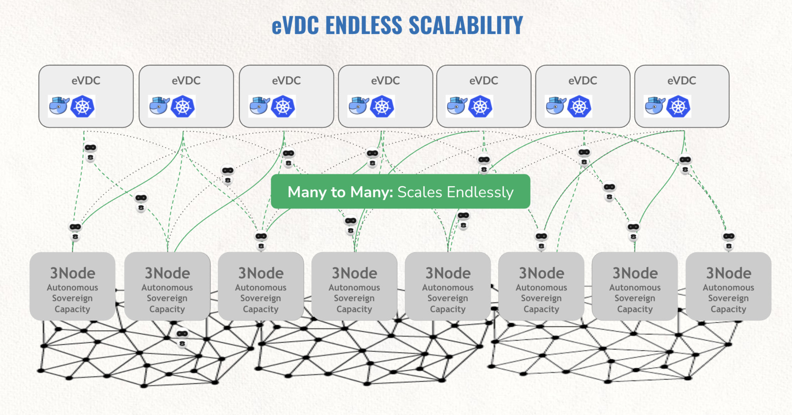
Each eVDC as shown above is a full blown Kubernetes deployment.
Unique for our Kubernetes implementation
- The Kubernetes networks are on top of our ZNet technology which means all traffic between containers and kubernetes hosts is end2end encrypted independent of where your Kubernetes nodes are deployed.
- You can mount a QSFS underneath a Kubernetes Node (VM), which means that you can deploy containers on top of QSFS to host unlimited amounts of storage in a super safe way.
- You Kubernetes environment is for sure 100% decentralized, you define where you want to deploy your Kubernetes nodes and only you have access to the deployed workloads on the TFGrid.
Features
- integration with znet (efficient, secure encrypted network between the zmachines)
- can be easily deployed at the edge
- single-tenant!
Architecture
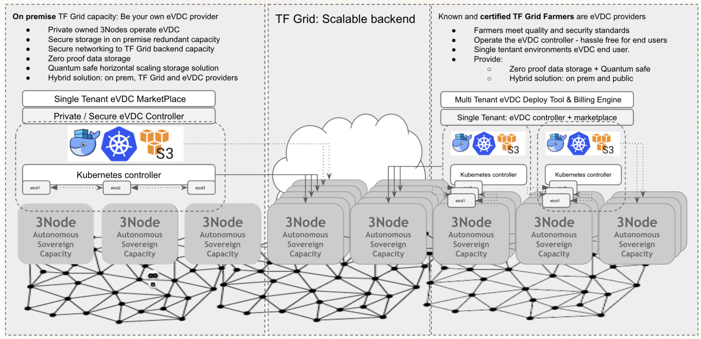
ZMachine
Features
- import from docker (market std for containers)
- can be easily deployed at the edge (edge cloud)
- single-tenant, fully decentralized!
- can deploy unlimited amounts of storage using our qsfs.
- minimal hacking surface to the Zero-Nodes, integrate silicon route of trust
- ZOS Filesystem: dedupe, zero-install, hacker-proof
- Webgateway: intelligent connection between web (internet) and container services
- integration with ZNet (efficient, secure encrypted network between the zmachines)
- Planetary Net: a true global single backplane network connecting us all
Architecture
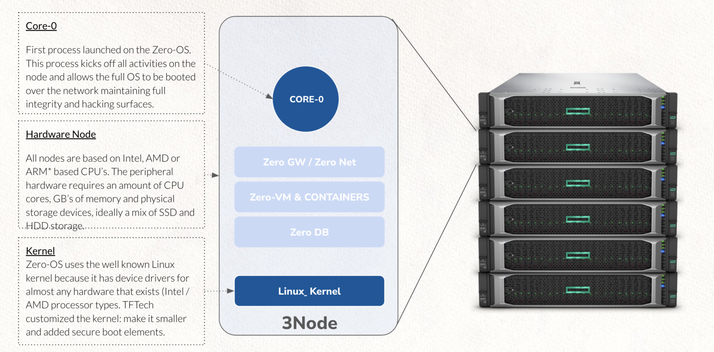
A ZMachine is running as a virtual machine on top of Zero-OS.
CoreX

This tool allows you to manage your ZMachine over web remotely.
ZMachine process manager
- Provide a web interface and a REST API to control your processes.
- Allow to watch the logs of your processes.
- Or use it as a web terminal (access over https to your terminal)!
Beyond Containers

Default features:
- compatible with Docker
- compatible with any Linux workload
We have following unique advantages:
- no need to work with images, we work with our unique zos_fs.
- every container runs in a dedicated virtual machine providing more security.
- the containers talk to each other over a private network: zos_net.
- the containers can use web_gw to allow users on the internet connect to the applications as running in their secure containers.
- can use core-x to manage the workload.
Quantum Safe Filesystem
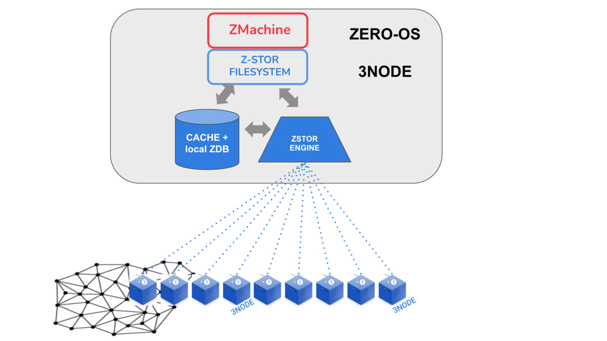
presents itself as a filesystem to the ZMachine.
Benefits
- Safe
- Hacker Proof
- Ultra Reliable
- Low Overhead
- Ultra Scalable
- Self Healing = recovers service automatically in the event of outage with no human
Can be used as
- backup and archive system
- Blockchain Storage Backend (OEM ONLY)
Implementation
see how its implemented in:
Quantum Safe Filesystem
presents itself as a filesystem to the ZMachine.
Benefits
- Safe
- Hacker Proof
- Ultra Reliable
- Low Overhead
- Ultra Scalable
- Self Healing = recovers service automatically in the event of outage with no human
Can be used as
- backup and archive system
- Blockchain Storage Backend (OEM ONLY)
Implementation
see how its implemented in:
ZOS FileSystem (ZOS-FS)
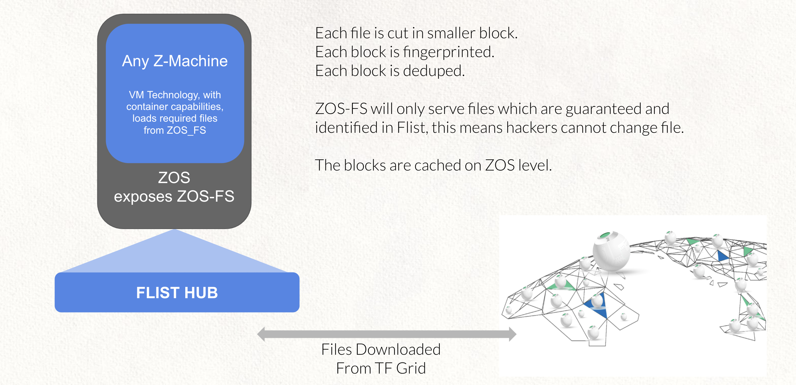
A deduped filesystem which is more efficient compared to images as used in other Virtual Machine technology.
Uses FLIST Inside
In Zero-OS, flist is the format used to store zmachine images. This format is made to provide
a complete mountable remote filesystem but downloading only the files contents that you actually needs.
In practice, Flist itself is a small database which contains metadata about files and directories and file payload are stored on a tfgrid hub. You only need to download payload when you need it, this dramatically reduce zmachine boot time, bandwidth and disk overhead.
Why this ZFlist Concept
Have you ever been in the following situation: you need two small files but they are embedded in a large archive. How to get to those 2 files in an efficient way? What a disappointment when you see this archive is 4 GB large and you only need 4 files of 2 MB inside. You'll need to download the full archive, store it somewhere to extract only what you need. Time, effort and bandwidth wasted.
You want to start a Docker container and the base image you want to use is 2 GB. What do you need to do before being able to use your container ? Waiting to get the 2 GB downloaded. This problem exists everywhere but in Europe and the US the bandwidth speeds are such that this does not present a real problem anymore, hence none of the leading (current) tech companies are looking for solutions for this.
We believe that there should a smarter way of dealing with this then simply throwing larger bandwidth at the problem: What if you could only download the files you actually want and not the full blob (archive, image, whatever...).
ZFList is splitting metadata and data. Metadata is referential information about everything you need to know about content of the archive, but without the payload. Payload is the content of the referred files. The ZFList is exactly that: it consists of metadata with references that point to where to get the payload itself. So if you don't need it you won't get it.
As soon as you have the flist mounted, you can see the full directory tree, and walk around it. The files are only downloaded and presented at moment that you try to access them. In other words, every time you want to read a file, or modify it, Zero FS will download it, so that the data is available too. You only download on-the-fly what you need which reduces dramatically the bandwidth requirement.
Benefits
- Efficient usage of bandwidth makes this service perform with and without (much) bandwidth
Flist Tool
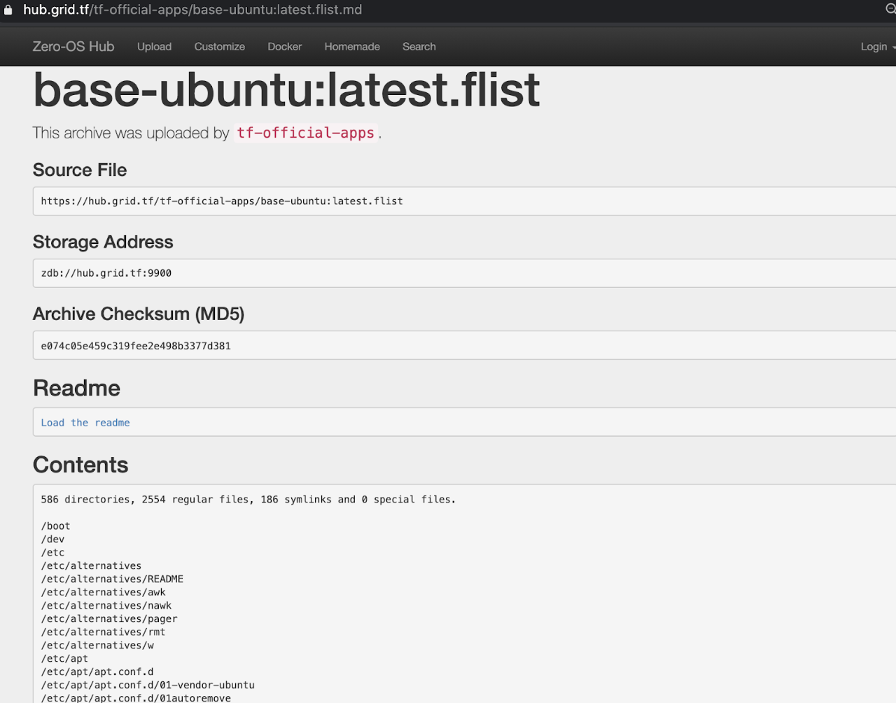
to see our tool for flists see: https://hub.grid.tf/
ZOS_Mount
A SSD storage location on which can be written upon inside a VMachine and VKube.
The SSD storage location is mounted on a chosen path inside your Z-Machine.
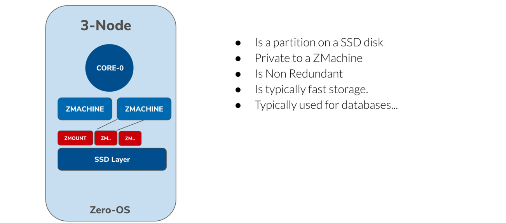
ZMounts are not incrypted, if you need security use a quantum safe filesystem.
ZOS-DB (ZDB)
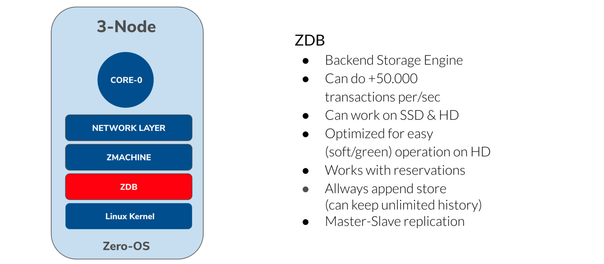
0-db is a fast and efficient key-value store redis-protocol compatible, which makes data persistent inside an always append datafile, with namespaces support.
ZDB is being used as backend storage for Quantum Safe Filesystem.
ZOS_Disk
Virtual disk creates the possibility to create and use virtual disks which can be attached to containers (and virtual machines).
The technology is designed to be redundant without having to do anything.
Roadmap
- The virtual disk technology is available for OEM's only, contact ThreeFold Tech.
Network Primitives
- Planetary network:
- is a planetary scalable network, we have clients for windows, osx, android and iphone.
- ZOS Net:
- is a fast end2end encrypted network technology, keep your traffic between your z_machines 100% private.
- ZOS NIC:
- connection to a public ipaddress
- WEB GW:
- web gateway, a secure way to allow internet traffic reach your secure Z-Machine.
Planetary Network
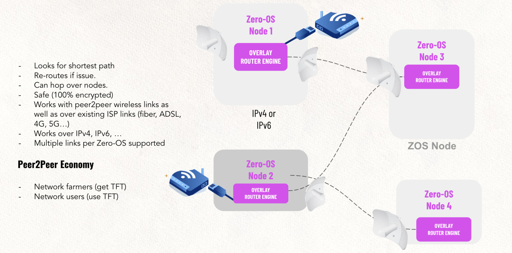
The planetary network is an overlay network which lives on top of the existing internet or other peer2peer networks created. In this network, everyone is connected to everyone. End-to-end encryption between users of an app and the app running behind the network wall.
Each user end network point is strongly authenticated and uniquely identified, independent of the network carrier used. There is no need for a centralized firewall or VPN solutions, as there is a circle based networking security in place.
Benefits :
- It finds shortest possible paths between peers
- There's full security through end-to-end encrypted messaging
- It allows for peer2peer links like meshed wireless
- It can survive broken internet links and re-route when needed
- It resolves the shortage of IPV4 addresses
Whereas current computer networks depend heavily on very centralized design and configuration, this networking concept breaks this mould by making use of a global spanning tree to form a scalable IPv6 encrypted mesh network. This is a peer2peer implementation of a networking protocol.
The following table illustrates high-level differences between traditional networks like the internet, and the planetary threefold network:
| Characteristic | Traditional | Planetary Network |
|---|---|---|
| End-to-end encryption for all traffic across the network | No | Yes |
| Decentralized routing information shared using a DHT | No | Yes |
| Cryptographically-bound IPv6 addresses | No | Yes |
| Node is aware of its relative location to other nodes | No | Yes |
| IPv6 address remains with the device even if moved | No | Yes |
| Topology extends gracefully across different mediums, i.e. mesh | No | Yes |
What are the problems solved here?
The internet as we know it today doesn’t conform to a well-defined topology. This has largely happened over time - as the internet has grown, more and more networks have been “bolted together”. The lack of defined topology gives us some unavoidable problems:
- The routing tables that hold a “map” of the internet are huge and inefficient
- There isn’t really any way for a computer to know where it is located on the internet relative to anything else
- It’s difficult to examine where a packet will go on its journey from source to destination without actually sending it
- It’s very difficult to install reliable networks into locations that change often or are non-static, i.e. wireless mesh networks
These problems have been partially mitigated (but not really solved) through centralization - rather than your computers at home holding a copy of the global routing table, your ISP does it for you. Your computers and network devices are configured just to “send it upstream” and to let your ISP decide where it goes from there, but this does leave you entirely at the mercy of your ISP who can redirect your traffic anywhere they like and to inspect, manipulate or intercept it.
In addition, wireless meshing requires you to know a lot about the network around you, which would not typically be the case when you have outsourced this knowledge to your ISP. Many existing wireless mesh routing schemes are not scalable or efficient, and do not bridge well with existing networks.
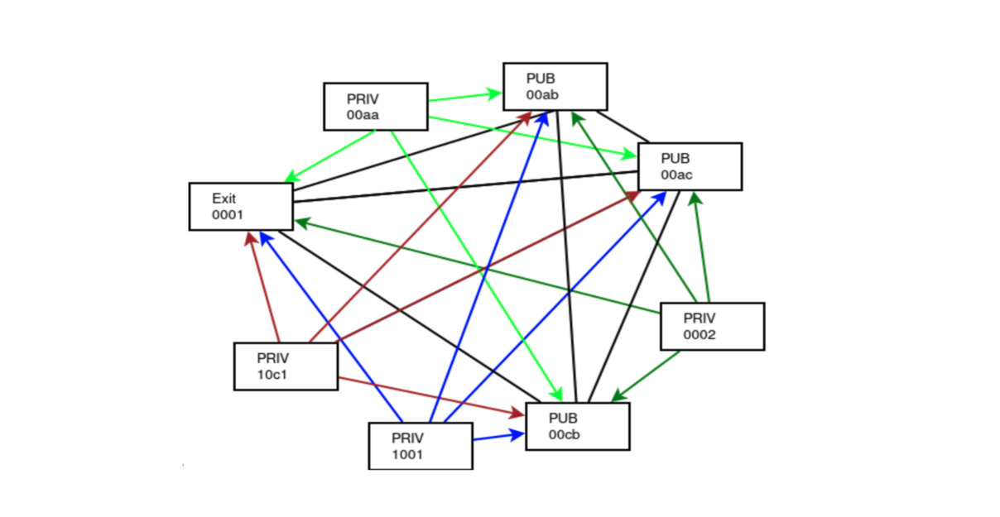
The planetary network is a continuation & implementation of the [Planetary Network](https://Planetary Network-network.github.io/about.html) network initiative. This technology is in beta but has been proven to work already quite well.
ZNET
Decentralized networking platform allowing any compute and storage workload to be connected together on a private (overlay) network and exposed to the existing internet network. The Peer2Peer network platform allows any workload to be connected over secure encrypted networks which will look for the shortest path between the nodes.

Secure mesh overlay network (peer2peer)
Z_NET is the foundation of any architecture running on the TF Grid. It can be seen as a virtual private datacenter and the network allows all of the N containers to connected to all of the (N-1) other containers. Any network connection is a secure network connection between your containers and creates peer 2 peer network between containers.

No connection is made with the internet.The ZNet is a single tenant network and by default not connected to the public internet. Everything stays private. For connecting to the public internet a Web Gateway is included in the product to allows for public access if and when required.
Redundancy
As integrated with WebGW:
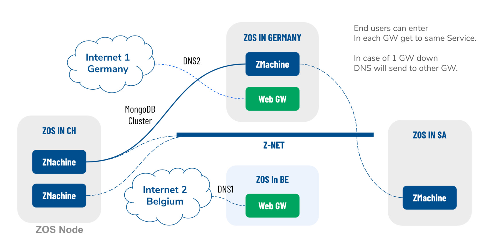
- Any app can get (securely) connected to the internet by any chosen IP address made available by ThreeFold network farmers through WebGW.
- An app can be connected to multiple web gateways at once, the DNS round robin principle will provide load balancing and redundancy.
- An easy clustering mechanism where web gateways and nodes can be lost and the public service will still be up and running.
- Easy maintenance. When containers are moved or re-created the same end user connection can be reused as that connection is terminated on the Web Gateway. The moved or newly created Web Gateway will recreate the socket to the Web Gateway and receive inbound traffic.
Interfaces in Zero-OS

ZNIC
ZNIC is the network interface which is connected to Z_Machine.
Can be implemented as interface to
- planetary_network.
- public ip address on a Zero-OS.
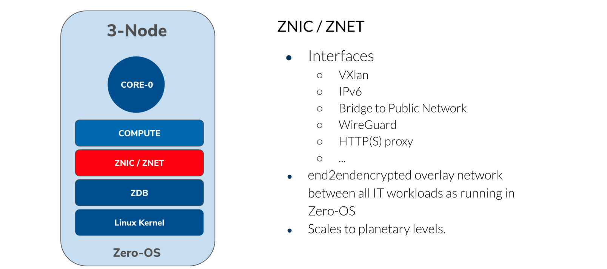
WebGW
The Web Gateway is a mechanism to connect the private networks to the open Internet, in such a way that there is no direct connection between internet and the secure workloads running in the ZMachines.

- Separation between where compute workloads are and where services are exposed.
- Redundant
- Each app can be exposed on multiple webgateways at once.
- Support for many interfaces...
- Helps resolve shortage of IPv4 addresses
Implementation
Some 3nodes supports gateway functionality (configured by the farmers). A 3node with gateway config can then accept gateway workloads and then forward traffic to ZMachines that only has Planetary Network (planetary network) or Ipv6 addresses.
The gateway workloads consists of a name (prefix) that need to be reserved on the block chain first. Then the list of backend IPs. There are other flags that can be set to control automatic TLS (please check terraform documentations for the exact details of a reservation)
Once the 3node receives this workloads, the network configure proxy for this name and the Planetary Network IPs.
Security
ZMachines has to have an Planetary Network IP or any other IPv6 (also IPv4 are accepted) but it means that any person who is connected to the Planetary Network network, can also reach the ZMachine without the need for a proxy.
So ti's up to the ZMachine owner/maintainer to make sure it is secured and only have the required ports open.
Redundant Network Connection

Unlimited Scale

The network architecture is a pure scale-out network system, it can scale to unlimited size, there is simply no bottleneck. Network "supply" is created by network farmers, and network "demand" is done by TF Grid users. Supply and demand scale independently, for supply there can be unlimited network farmers providing the web gateways on their own 3nodes and unlimited compute farmers providing 3nodes for compute and storage. The demand side is driven by developers creating software that runs on the grid, system integrators creating solutions for enterprise and this demand side is exponentially growing for data processing and storage use cases.
DAO 3 Layer Approach
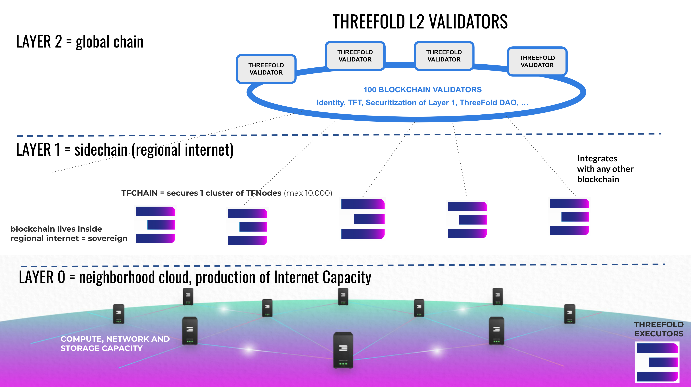
The threefold grid has 3 layers:
- Layer 2 = ecosystem security layer
- only 1 blockchain with 100 validators, secures the multiple Layer 1 networks.
- Layer 1 = internet of blockchains layer
- ultimate scale because of thousands (or more) of blockchains
- Layer 0 = the IT capacity layer
- cloud computing layer, provide compute, storage and network resources to L1 and L2
Validators play an important role in securing the ThreeFold ecosystem, a validator is a blockchain component run by independent parties who validate transactions happening on the blockchain until consensus has been achieved.
Smart Contract for IT Intro
Ability for developers to launch IT workloads (applications) on the ThreeFold Grid using our TFGrid primitives secured by blockchain concepts.
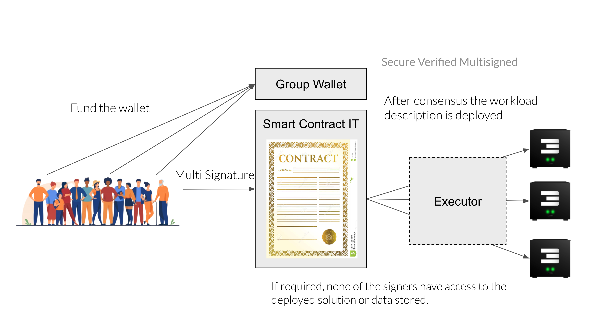
Following benefits
- IT workloads can be deployed 100% deterministic, this means all specific properties of the workloads like necessary files, network bridges, processes, ... are all known at build time, this leads to good security and predictability.
- Consensus can be required for deploying a workload on the ThreeFold grid.
- Auditing and full transparancy on what has been deployed by who at what time.
Smart Contract IT Flow
The TFChain Blockchain will keep a record of all Entities, Twins, Nodes and Farmers in the TF-Grid network. This makes it easy to integrate the Smart Contract on TFChain as well since we can read from that storage in runtime.
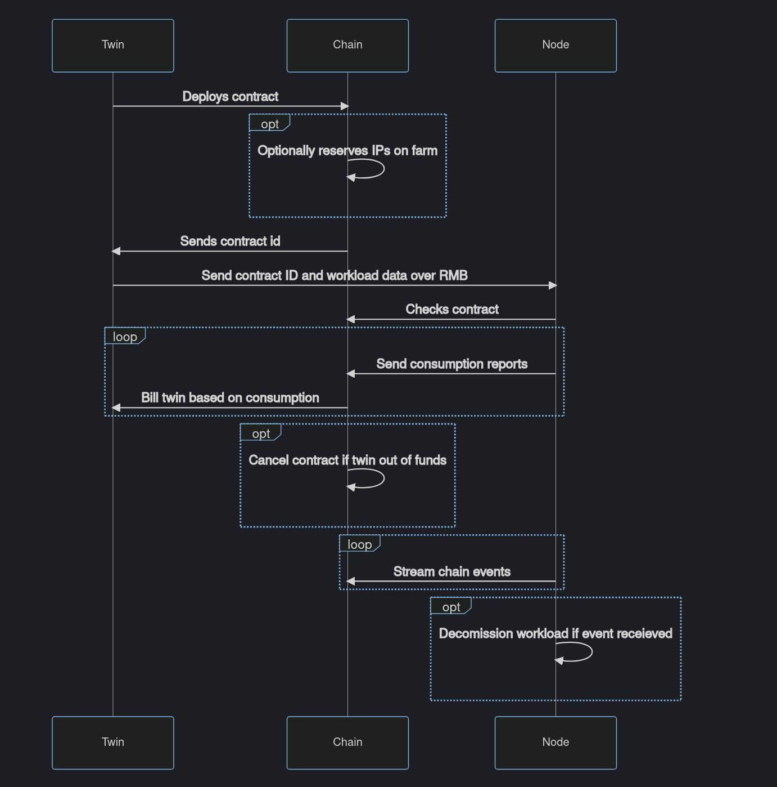
The Smart Contract on TFChain works as following:
Infrastructure As Code

IAC = DevOps is a process framework that ensures collaboration between Development and Operations Team to deploy code to production environment faster in a repeatable and automated way. ... In simple terms, DevOps can be defined as an alignment between development and IT operations with better communication and collaboration.

Concepts
Cloud Units
Cloud units are the basis for buying & selling capacity on the ThreeFold Grid (for more info see here).
- 1 CU = 1 compute unit
- 1 SU = 1 storage unit
- 1 NU = 1 network unit
References:
- Cloud units the the building blocks for any Cloud / IT workload. See definition here
- Cloud units are also used to determine commercial pricing for utilisation. See definition here
- Low level primitive cloud functions
TFGrid 3.0 Manual

see https://library.threefold.me/info/manual/#/manual3_home_new